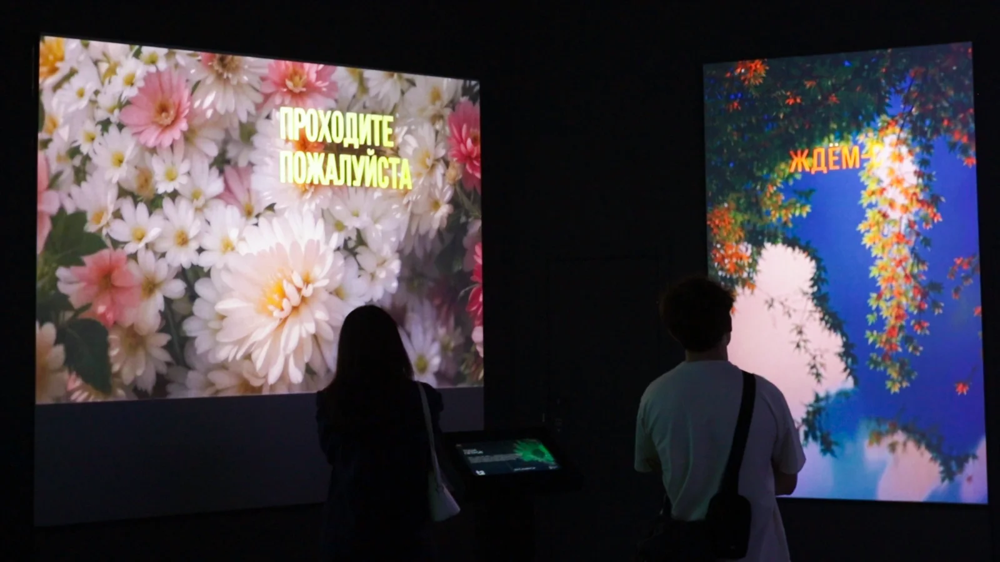
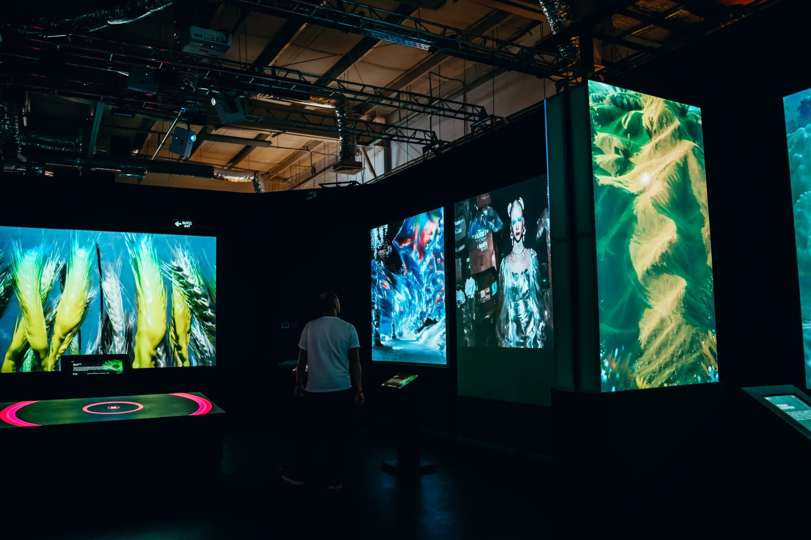
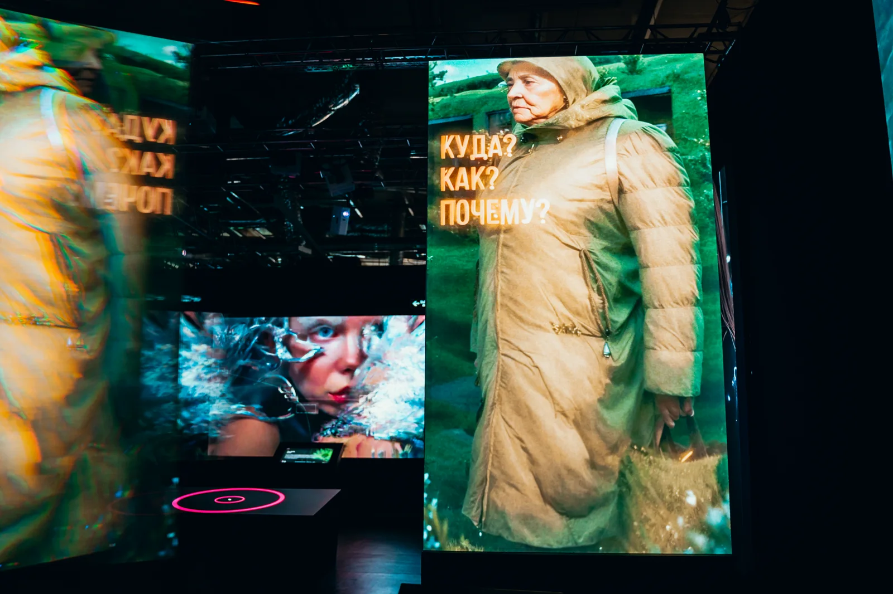
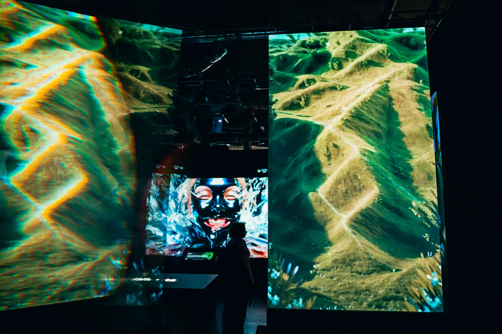
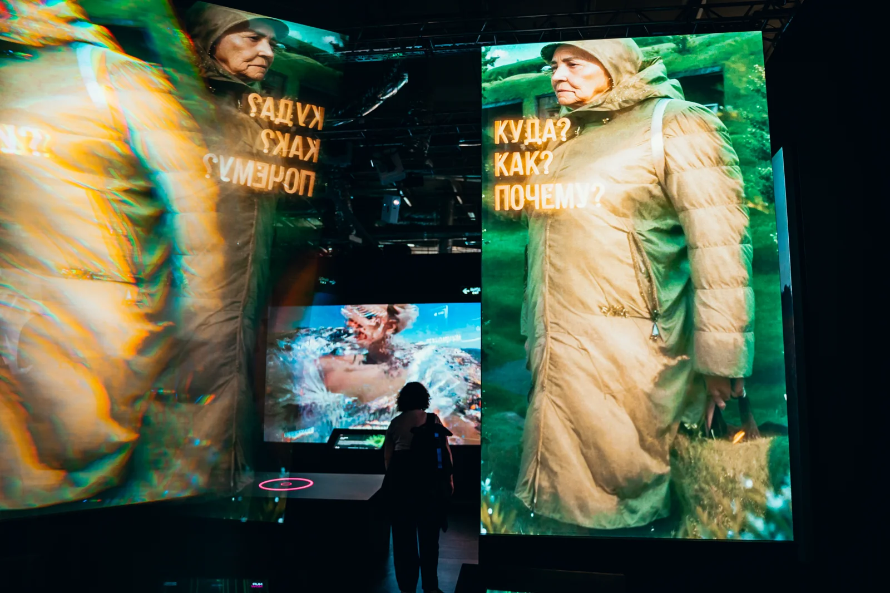
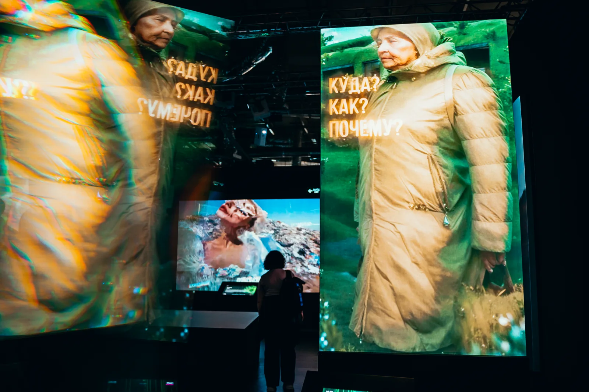
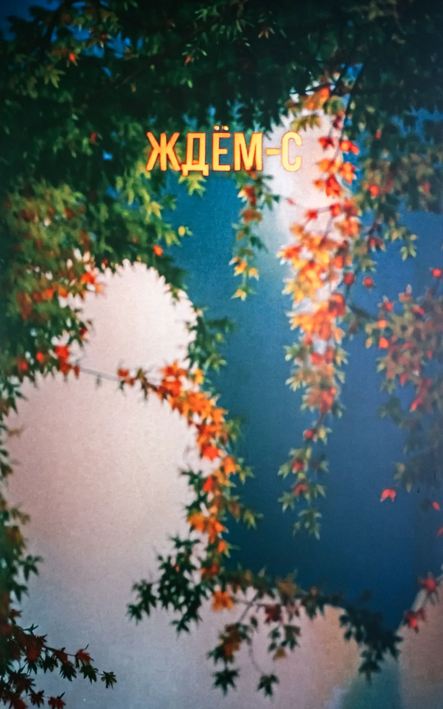
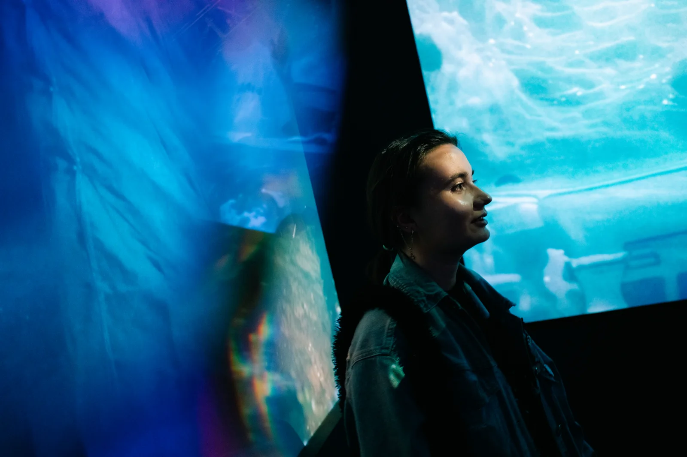

NUR Festival · «Фестиваль НУР»
Kazan · NUR NOW × T2 · 22–25 May 2025
Participation in the exhibition with the Berezovy Prompt art group.
NUR NOW × T2 was a joint project by the NUR festival and the Berezovy Prompt art group. The works explored language, cultural identity, and how they change through interaction with artificial intelligence.
Photos and Images










